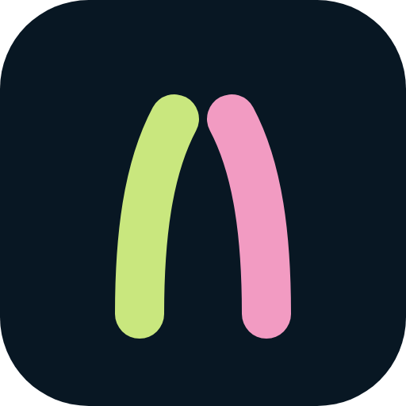

1 · Arco
Dos trazos que suben y se inclinan el uno hacia el otro hasta casi tocarse. Son dos personas que se apoyan sin fundirse (queda un hueco: cada uno es quien es) y juntos forman un arco, una forma que sube. No dibuja cuerpos ni corazones; lo dice la postura.
Es la más sencilla de todas: dos trazos y un hueco. A 16 px queda como una «Λ» redondeada en dos colores y en un tono sigue entendiéndose.
Lo que vigilar: a 16 px, en un tono, se puede leer como una «n» o una «Λ». No conozco marcas con esta forma, pero no he podido comprobarlo con todas.